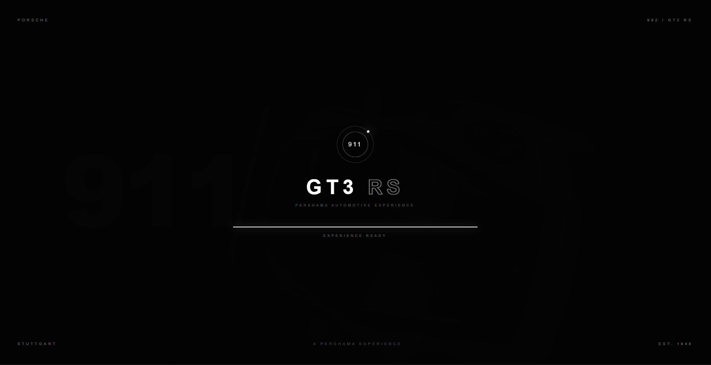
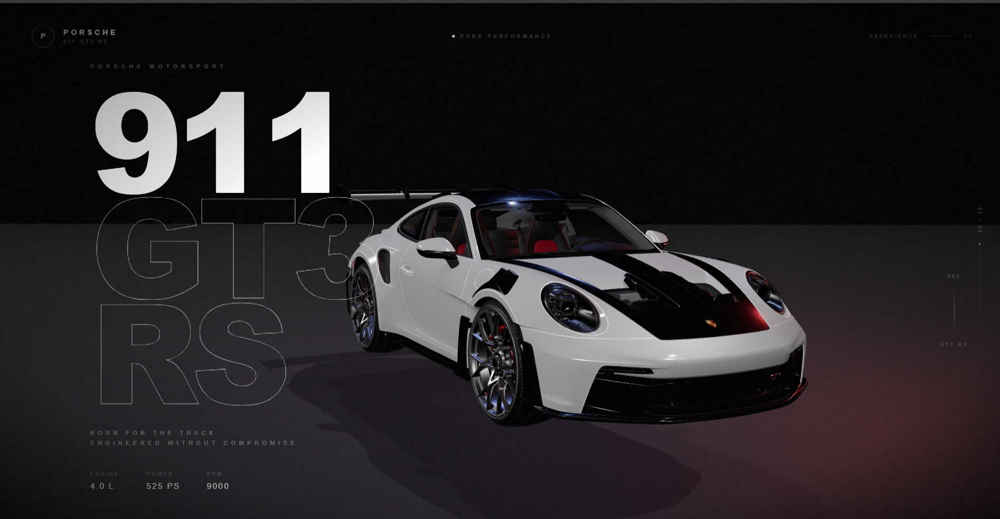
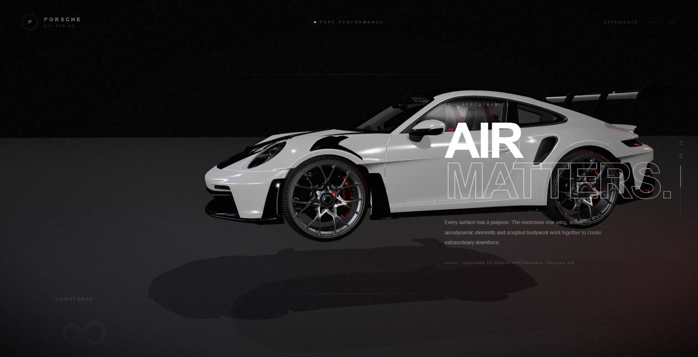
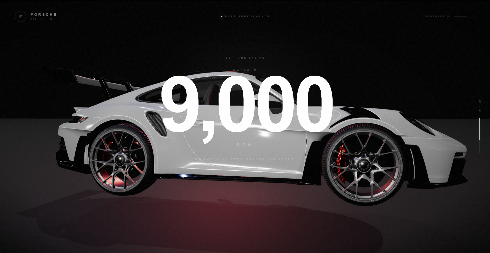
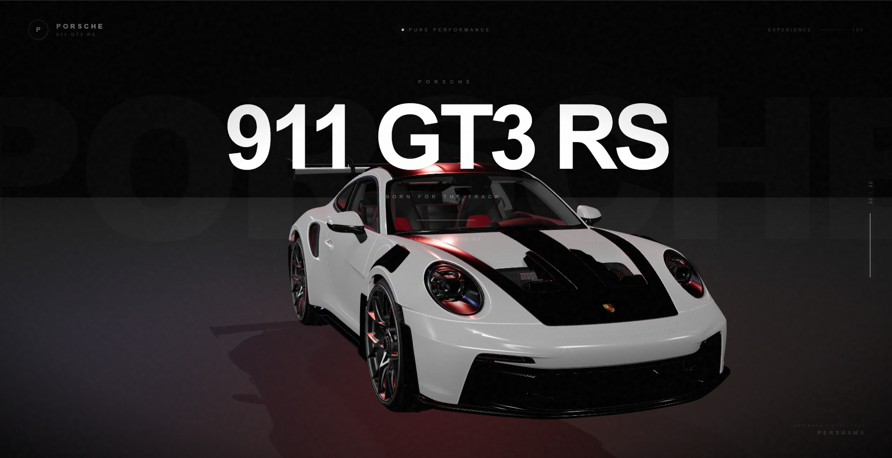

Porsche 911 3D Experience
In-depth visual walkthrough of features, user interface modules, and architectural design steps.

01 Preloader & Startup Experience
To gracefully handle heavy 3D assets and high-end automotive renders, a sleek custom loading screen was engineered at startup. This preloader ensures complete asset synchronization before initialization, guaranteeing a butter-smooth entry into the 3D environment.

02 Dynamic 3D Car Motion & Scroll Integration
Here lies the core challenge of the project: engineering the 3D car to dynamically move, rotate, and react seamlessly to user scroll interactions. Countless hours of performance testing, coordinate tuning, and frame-rate optimization were poured into this module to achieve that buttery-smooth, cinematic professional feel.

03 Hero Landing & Cinematic Car Entrance
This is the main landing interface and the very first visual impression upon entering the site. Special focus and precise engineering went into orchestrating the smooth cinematic entrance of the car, locking it perfectly into the center stage to instantly capture the user's attention and set a high-end tone.

04 Horizontal Car Rotation & Realistic Shadow Integration
In this section, the focus shifted to engineering the car to rotate horizontally in sync with the user's scroll motion. Special attention and meticulous fine-tuning were dedicated to the lighting and shadow effects underneath the vehicle, ensuring absolute realism and a striking 3D depth perception.

05 Reverse Rotation & Dynamic Lighting Reflections
In this phase, the car smoothly rotates in the opposite direction synchronized with the scroll, while dynamic technical specifications and data points appear at precisely timed intervals. Special focus was directed toward perfecting lighting dynamics and realistic reflections bouncing off the vehicle's body to achieve an elite visual finish.

06 Grand Finale & Front-Facing Showcase
As the grand finale of the digital experience, the focus shifted to positioning the front profile of the car directly facing forward. Meticulous attention was poured into amplifying surface details, sharp lighting reflections, and material clarity, delivering a powerful, high-impact visual conclusion that leaves a lasting impression.